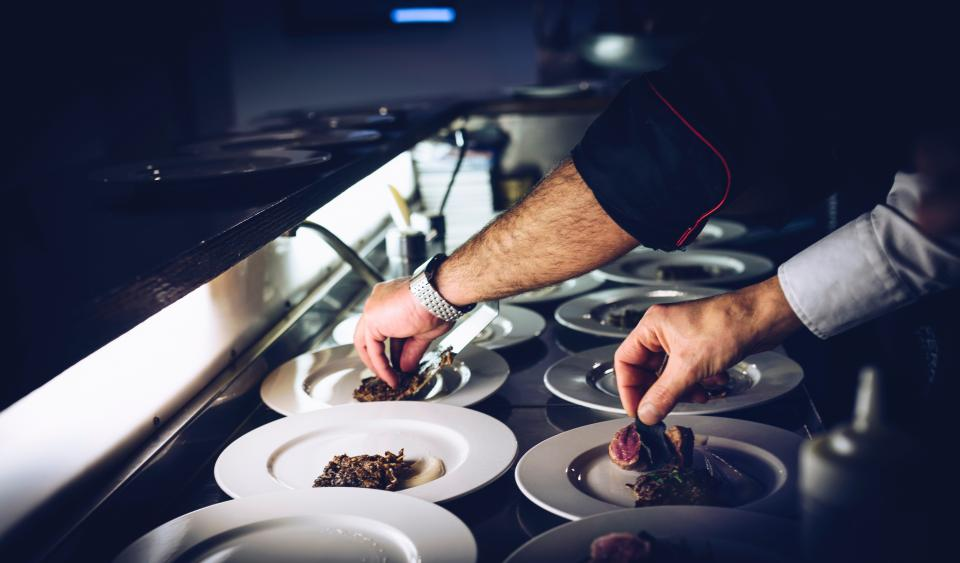
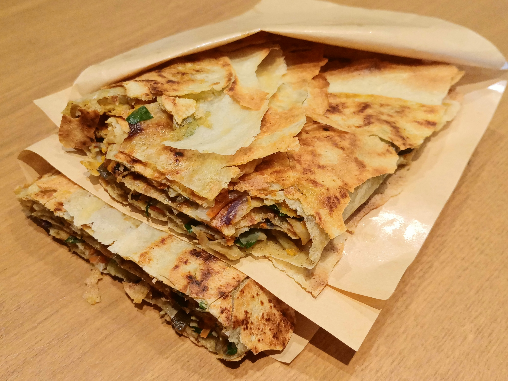
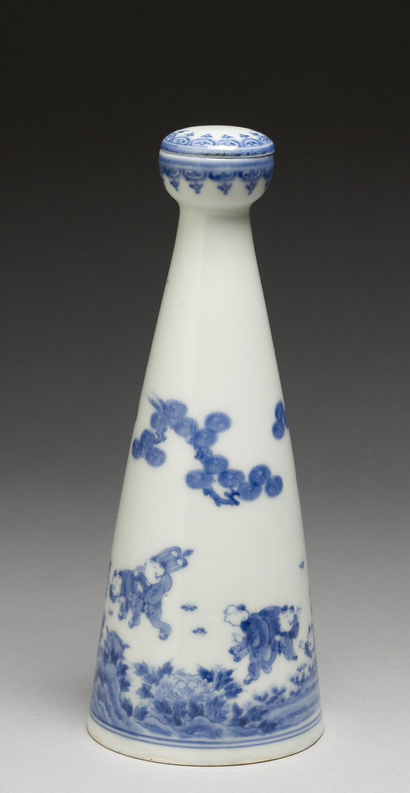
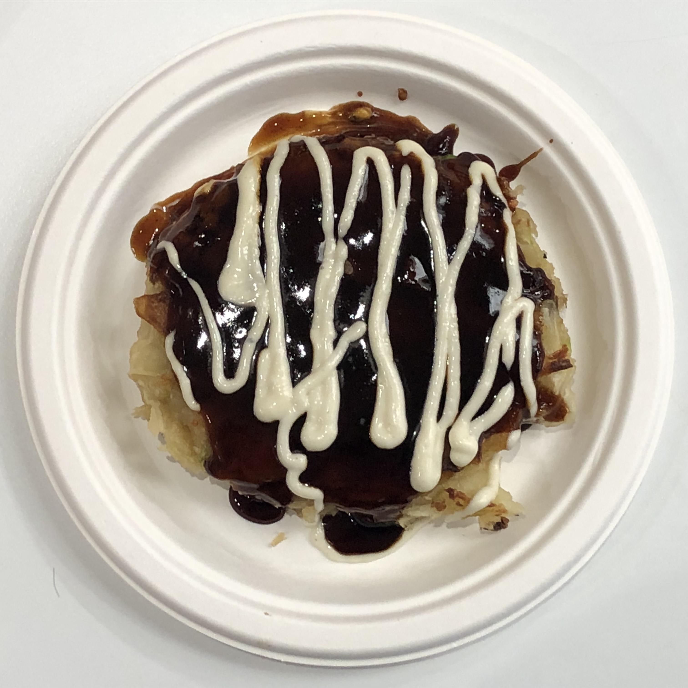

都内仕込みの職人技
店主は東京・五反田の名店「お好み焼きいまり」出身。都内で重ねた修行の日々で培った焼き加減とカットの手捌きを、つくばの鉄板の上で一皿ごとに丁寧に再現しています。

お好み焼き、ねぎ焼き、モダン焼き、とんぺい焼き——目の前で焼き上がる、静かな鉄板ライブ。

店主は東京・五反田の名店「お好み焼きいまり」出身。都内で重ねた修行の日々で培った焼き加減とカットの手捌きを、つくばの鉄板の上で一皿ごとに丁寧に再現しています。
生地を返す音、立ちのぼる湯気、香ばしい匂い。鉄板を焼くのはオーナー自らです。カウンター越しに、焼き上がりまでの手元をそのまま眺められる静かな臨場感を楽しめます。

注文はひとこと「まるなげ」。苦手な食材だけを先にお伝えいただければ、あとはその日いちばんの粉物を店主が鉄板の上で組み立てます。

日本酒・焼酎・ナチュールワインまで、粉物に寄り添う酒質にもこだわりを。ザーサイやポテトサラダなど、酒肴の仕込みにも手を抜きません。
最重要メニュー
注文は「まるなげ」のひとこと。苦手な食材だけを最初にお伝えいただければ、あとはその日いちばんの粉物を、店主が鉄板の上で丸ごと組み立てます。何が焼き上がるかは、目の前で完成するまでのお楽しみです。

価格はお問い合わせください（コース内容・価格は仕入れ状況により変動する場合があります）
店主は東京・五反田の名店「お好み焼きいまり」の出身。都内で長く修行を重ね、つくば市赤塚の地で「お好み焼き いしり」を開きました。鉄板の前に立つのはいつも店主自身で、焼き加減の見極めから仕上げのカットまで、一皿ごとに丁寧に仕事をします。ご来店の際には苦手な食材を最初に伺うなど、目の前のお客様に向き合う姿勢も持ち味です。
「鉄板を焼くのはオーナー自ら。長く都内で修行をし、この地でオープンしたそう」
——お好み焼きを食べに初めて訪問されたお客様の声より
★★★★★
ご紹介で来店されたお客様
「大切な人に紹介したくなる店」——まるなげコースはボリュームたっぷりで、店のおすすめもたくさん堪能できました。〆のそば飯は塩でいただくと、レモンの酸味が効いて絶品です。スタッフの気さくな笑顔にも和みました。
★★★★★
知人のすすめで来店されたお客様
知人のすすめで初めて訪れました。店内はオシャレで居心地がよく、カウンター越しに焼く様子を間近で見られるのも楽しいひととき。店主の気さくな人柄にも助けられ、ねぎ焼きやモダン焼きに大満足でした。
★★★★☆
まるなげコースを楽しまれたお客様
カウンター席なので、焼く様子が目の前で見られるのがうれしいところ。苦手な食材を先に確認してくれる気配りもありがたく、ポテトサラダのほどよい甘み、とろけた部分とこんがり部分の両方が楽しめるチーズ焼きも印象的でした。珍しい焼酎や日本酒があったのも良かったです。
★★★★★
会食利用でご来店のお客様
鉄板を焼くのはオーナー自ら。焼き加減が完璧で、重くないのでたくさん堪能できました。カットまでこなす手捌きは必見です。天井が高く雰囲気の良い内装で、会食はもちろん友人との食事やデートにも幅広く使えそうです。
★★★★★
粉物目当てに再訪されたお客様
名物「いしりの丸投げ」を注文。にんにくの香りが食欲をそそるあごすじにんにくの芽炒めは食感も抜群で、箸が止まりません。ねぎ焼き、とんぺい焼き、モダン焼き、焼きそばまで、まさに粉物のフルコース。目の前で焼き上げるライブ感、音や香りも楽しめました。
天井が高く、洒落た雰囲気の店内です。カウンター席からは鉄板の様子がよく見え、焼き上がるまでの時間も楽しめます。会食や友人との食事、デートまで幅広いシーンでご利用いただけます（個室のご相談も承っておりますので、詳しくはお問い合わせください）。